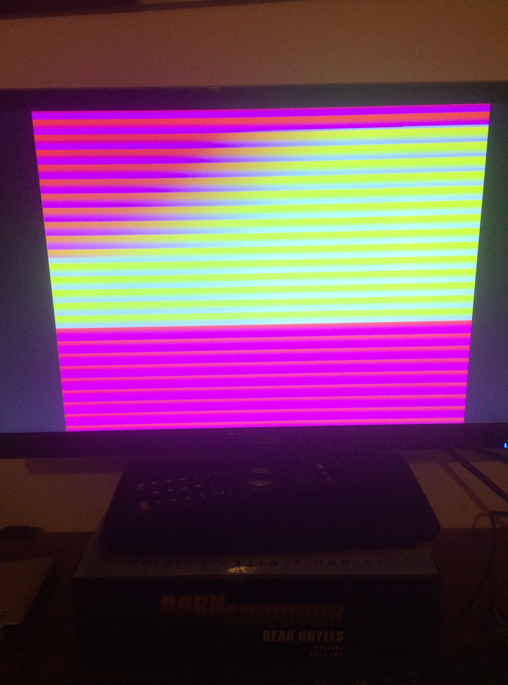
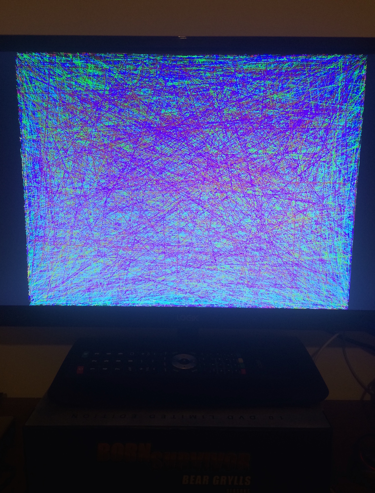
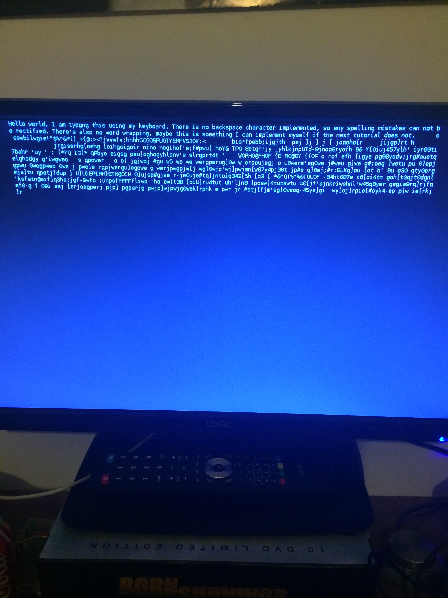

creating an operating system for a raspberry pi
30th january 2015

another of my little side projects i've been doing is following the online tutorials from alexander chadwick from the university of cambridge. the tutorials are called baking pi, and shows you how to create a simple operating system for the raspberry pi using assembly language. the tutorials take you through blinking an LED on the board, to displaying a users keyboard input onto the screen and being able to run commands. so far i have completed the first section of the tutorials using the OK LED.
the start
firstly i had to get to grips with assembly programming, and alexander helps with this by providing really informative steps and 'extra info' boxes along the side of the tutorial with little snippets of information in them.
then i moved onto the second peice of hardware on the pi. i used the system timer to create an accurate wait function, so i could create delays in turning the LED on and off to create a flashing sequence. i stored all the functions related to te timer in a new systemTimer.s file. to create a delay, i take the current time and subtract the time when the Wait method was first called to find the time elapsed and then i just do a check each iteration to see if enough time has elapsed. this is a much better method of creating a delay rather than just taking a large number and subtracting a number from it until it reaches 0.
to finish off this section, my code now can take in a sequence of 0's and 1's representing a morse code signal, and will flash the OK LED in that sequence with it doing long flashes and short flashes to represent dots and dashes.
i have just moved onto the screen section of the tutorials and will post my progress once I'm done. hopefully there will be some nice screenshots to go with it, even if they are going to be taken with the camera on my phone.
you can find the github repo for my pios here.
output to the screen
so firstly i learnt about communicating between the CPU and GPU using a postman and reading/writing messages between the. the CPU basically tells the GPU what to draw and where. this is done by setting the colour of various pixels. naturally the first part of the tutorial was to basically go along each pixel along the column and row and set it's colour incrementing the colour value each time. this left me with some really cool patterns on my screen:
then i moved onto something a little more complicated - drawing lines. now, this won't sound too complicated just yet, because once we know how to set pixel colours it's just a case of setting all the pixel colours on the line. but how do we determine what pixels are on the line? well your first guess is to get the coordinates of where the line starts and where it ends and then get the equation of the line using the gradient. and you would be right, except that finding the gradeient introduces two problems to programming at this level. one of them is division. division is very slow in assembly. the other is managing decimal numbers, which is also difficult. so the tutorials introduced me to an algorithm developed by a chap called jack elton in 1962 called the bresenham's line algorithm. with a little optimisation, the algorithm avoids all uses of division in part for simple addition and multiplication. and best of all the multiplication is by two, which is a very simple logical left shift by 1. the algorithm basically works by calculating which direction to move in each step. it decides to move by 1 in either the X or Y direction, depending on which movement would cause the least error.
i then moved onto generating random numbers. as many people know, it's very hard to produce actual random numbers on a computer. so the tutorial introduced me to something else new. it introduced me to the quadratic congruence generator which takes three predetermined inputs that follow a particular set of rules and then puts them into an equation which produces psuedo random numbers. the task then was to use the random number generator to generate coordinates for the line so that it would start creating lots of random lines on the screen.
so after a little bit of tinkering, just following the tutorials actually caused me to get a few errors (namely the same vertical line being produced continually on top of itself instead) i managed to get it to draw lots of colourful random lines on my screen:
now i am going to move onto drawing text to the screen. for this part of the tutorial i will be using the old-school bitmap method of producing characters on the screen, because the author didn't have time to implement it in the more modern vector font format.
drawing text to the screen
printing text to a screen causes problems in computers, because text isn't a data type. it is easy to assign each character a code, but when it comes to knowing when the text ends is the tricky bit, because each string is of variable length.
once i managed to print out characters to the screen using 8x16 bitmap fonts, i set about printing strings of characters to the screen. this was as simple as looping round characters and drawing them. i also allowed the newline character to be used and the tab character. for both of these i just check if the current character is equal to any of these, and perform an action if it is. for example if the next char is the newline character ('\n') then i update the Y coordinate to be one character heights worth down. for a tab character i just shift each X coordinate.
so now that i can print strings to the screen, i needed to find something useful to print. according to the tutorial, computers running ARM have certain information given to them when they boot. this information tells them what they have available to them. one of the 'tags' of information they get is called the 'cmdline' and this is what I'm going to print out. on the raspberry pi this should print out various bits of information such as the MAC address, serial number and screen resolution.
to do this, i have to find the tag. there are 9 tags stored in the informaton block so i just need to search for the one i want. this drew to the screen:
dma.dmachans=0x7f35 bcm2708_fb.fbwidth=1920 bcm2708_fb.fbheight=1080 bcm2708.boardrev=0xe bcm2708.serial=0x71d6e3cc smsc95xx.mac
next i moved onto formatting strings. in C, there is the very powerful 'sprintf' function which allows strings to be formatted using arguments. but obviously i didn't have this function available to me, so i had to write one. the tutorial shows you how to implement the following formatting rules:
- %% - writes a % character to the output
- %c - writes the next argument as a char
- %d - writes the next argument as a signed base 10 number
- %n - writes nothing to the output, but instead copies number of characters written so far to the location addressed by next location.
- %s - writes the next argument as a pointer to a null terminated string
- %o - writes the next argument as an unsigned base 8 number
- %u - writes the next argument as an unsigned base 10 number
- %x - writes the next argument as an unsigned base 16 (hex) number
once finishing this function, the tutorial then went through using this function to output a conversion chart which shows a list of numbers in base 10, binary, hexadecimal, octal and ASCII. this is the end of the screen series of tutorials.
keyboard input
next challenge is input from the keyboard. this is particularly tricky as USB drivers can be a pain to implement even though they are designed to be a simple interface. luckily alexander went ahead and wrote a driver for us. he did mention it took him weeks to complete so i'm kinda glad the tutorial has skipped over that part. what the tutorial does cover, however, is how to 'link' in other peoples code. in this case, how we tell the operating system to load in the functions from the USB driver.
the tutorial then covers lookup tables and in this case, a lookup table which maps keys to characters. i then had to implement a function that takes the key that has been pressed, and then returns the character associated with it from the lookup table. from there it's a simple case of calling the function continually and drawing the characters to the screen.
and at this point i finished the tutorial. i managed to take input from a keyboard and display is on screen. there is one more lesson which goes further and turns your os into a full text terminal. but that's for another day.
-dom